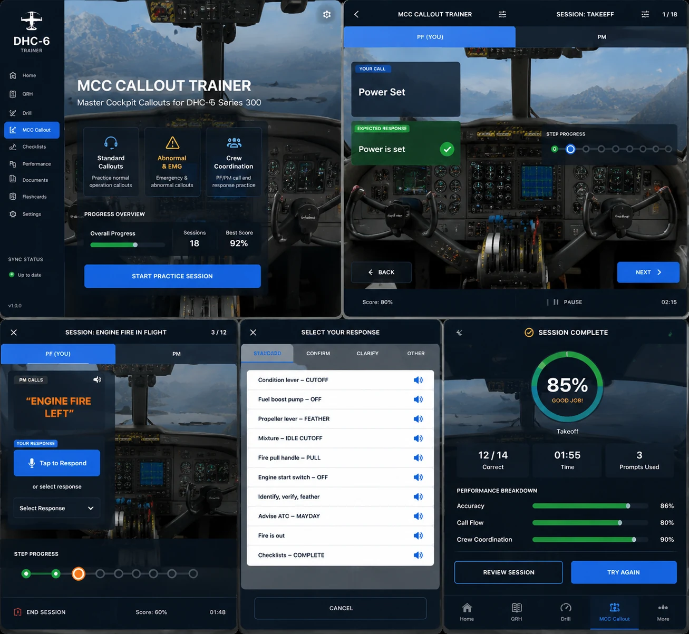

Focused recurrent study
Review procedures, QRH flows, MCC callouts, systems, and cockpit panels on a larger display.
The Windows desktop build supports briefing-room use, instructor-led review, QRH and MCC callout practice, systems study, and large-screen procedure walkthroughs. Installer access is controlled and verified.
Current desktop release: 1.7.4. Public installer links are not exposed on the website.

Designed for licensed pilots, instructors, and training organizations.
Review procedures, QRH flows, MCC callouts, systems, and cockpit panels on a larger display.
Walk students through procedure flows, calls, expected responses, cockpit targets, and debrief points.
Desktop access can be managed for approved training organizations and future instructor/student workflows.
Approved users can request installer routing after manual verification. This page does not publish direct public EXE/MSI links.
Desktop installer files should remain behind verified access. Use the Android app as the public store product and desktop as a licensed add-on for approved users, instructors, and training organizations.
| Platform | File | Access |
|---|---|---|
| Windows | DHC6TrainerDesktop-1.7.4.exe | License-gated |
| Windows | DHC6TrainerDesktop-1.7.4.msi | License-gated |
| macOS | DHC6TrainerDesktop-1.7.4.dmg | Coming later |
| Linux | DHC6TrainerDesktop-1.7.4.deb | Coming later |